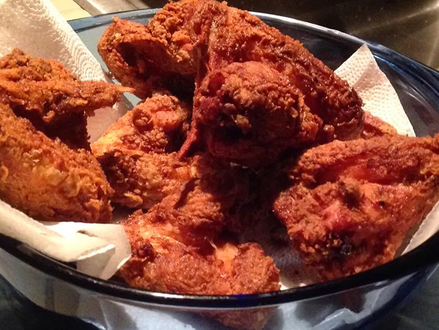

Crispy Southern Fried Chicken

Description
This recipie will help you make the crispy and juciy fried chicken
like grandma used to make for sunday dinners.
Ingredients
- 3 cups all-purpose flour
- 1 tablespoon seasoned salt
- 1 tablespoon garlic powder
- 1 tablespoon onion powde
- 1 tablespoon coarse ground black pepper
- 2 eggs
- 4 cups buttermilk
- 1 cup barbeque sauce
- 2 tablespoons Worcestershire sauce
- 1 tablespoon steak sauce
- 1 (3 pound) whole chicken, cut into pieces
- 2 cups oil for frying
Directions
- In a large shallow dish, mix together flour, seasoned salt, garlic powder, onion powder, and black pepper. In a separate bowl, beat eggs, then whisk in buttermilk, barbeque sauce, Worcestershire sauce, and steak sauce.
- Dredge chicken in milk mixture, then in seasoned flour, alternating in each at least twice. Heat oil in a large, deep-sided skillet to 375 degrees F (190 degrees C).
- Cook chicken in hot oil until golden brown on both sides, about 10 minutes each side.